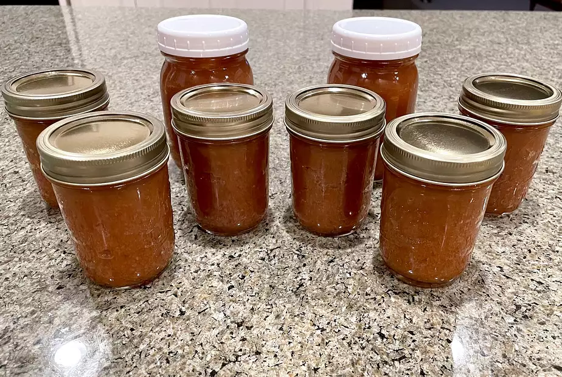

Home
Apple Butter

Description:
This is the Apple Butter Recipe
Ingredients:
- 5 1/2 pounds apples - peeled, cored and finely chopped
- 4 cups white sugar
- 2 teaspoons ground cinnamon
- 1/4 teaspoon ground cloves
- 1/4 teaspoon salt
Steps:
- Place apples in a slow cooker. Mix sugar, cinnamon, cloves, and salt in a medium bowl; pour over apples and mix well.
- Cover and cook on High for 1 hour.
- Reduce heat to Low and cook, stirring occasionally, until mixture is thickened and dark brown, 9 to 11 hours.
- Uncover and continue cooking on Low for 1 hour. Stir with a whisk to increase smoothness if desired.
- Spoon mixture into sterile containers, cover, and refrigerate or freeze.
View the original website